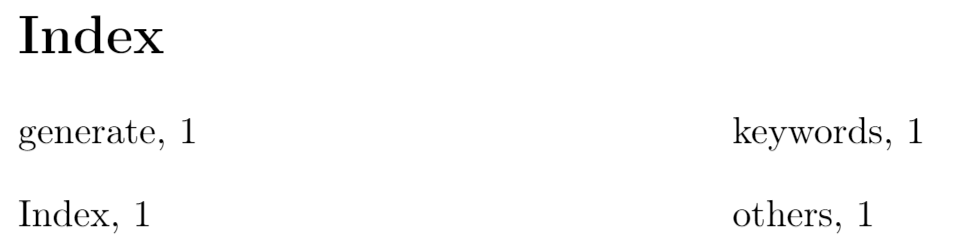
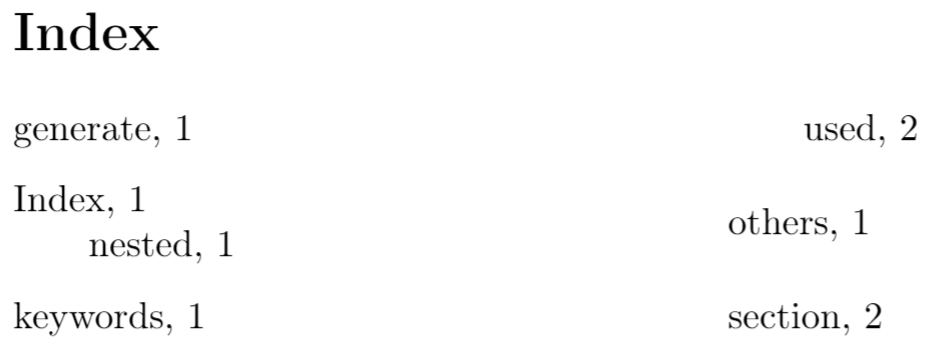
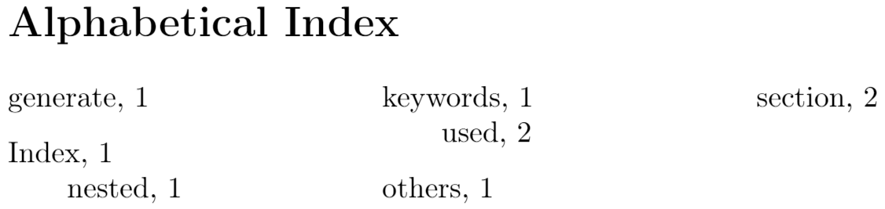
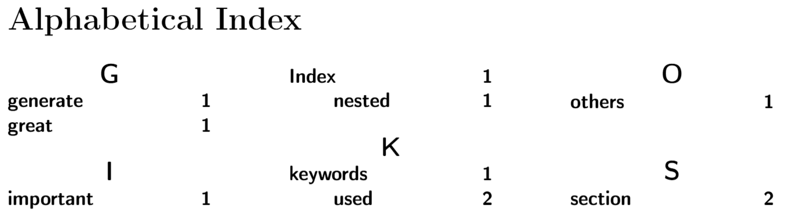
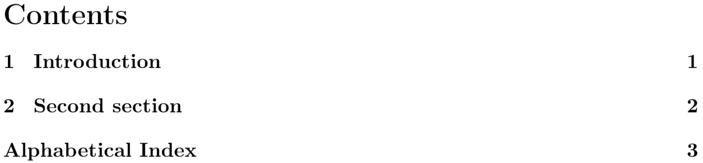

Indices
In some big documents, for example books, it is customary to make an alphabetic list containing the main terms. With LaTeX and the support program imakeidx, an index can be generated quite easily.
Introduction
Let's see a simple working example.
\documentclass{article}
\usepackage[T1]{fontenc}
\usepackage{imakeidx}
\makeindex
\begin{document}
\section{Introduction}
In this example, several keywords\index{keywords} will be used
which are important and deserve to appear in the Index\index{Index}.
Terms like generate\index{generate} and some\index{others} will
also show up.
\printindex
\end{document}
The following image shows the output produced by the example above:

First, the package is included in the preamble by the line
\usepackage{imakeidx}
Then the command \makeindex is mandatory for the index to work and can take some parameters to customize its appearance, in the next sections this will be clear.
To add an entry to the index the command \index{} is used, where the word to be added is inserted as the parameter. Be careful, this won't print the word in the current position but only in the index.
Finally, the command \printindex will actually render the index. If you are using a special localization by means of the babel package, the title will be translated accordingly.
Note: instead of imakeidx, the package makeidx may be imported but offers less customizations possibilities.
Indices on Overleaf
When adding an index to a project on Overleaf, it is important to note that for the index to compile properly, the main .tex file needs to be in the root directory of the project, outside of any folders. This ensures that the auxiliary files needed to generate the index are cached in a way that they are accessible to the compiler.
Entries and sub-entries
As mentioned in the previous section, the command \index will add the word passed to it to the index, but this is not the only way it can be used.
\documentclass{article}
\usepackage[T1]{fontenc}
\usepackage{imakeidx}
\makeindex
\begin{document}
\section{Introduction}
In this example, several keywords\index{keywords} will be used
which are important and deserve to appear in the Index\index{Index}.
Terms like generate\index{generate} and some\index{others} will also
show up. Terms in the index can also be nested \index{Index!nested}
\clearpage
\section{Second section}
This second section\index{section} may include some special word,
and expand the ones already used\index{keywords!used}.
\printindex
\end{document}
The following image shows the output produced by the example above:

It is a common practice to extend terms in the index to include special adjectives. For instance, the word Field may have a special meaning if preceded by the adjective finite or followed by of characteristic 0, and it may be a bit cumbersome to add different types of Fieldas separate entries in the index. For such cases, you can add an exclamation mark "!" that will add the terms after this mark as sub entries of the primary word Field.
In the example, the word "Index" has the word "nested" as sub-entry.
Formatting the Index
Simple formatting for the index, such as changing the index title, adding several columns and changing the column width can be easily done passing optional values to \makeindex:
\documentclass{article}
\usepackage[T1]{fontenc}
\usepackage{imakeidx}
\makeindex[columns=3, title=Alphabetical Index]
\begin{document}
\section{Introduction}
In this example, several keywords\index{keywords} will be used which
are important and deserve to appear in the Index\index{Index}.
Terms like generate\index{generate} and some\index{others} will also
show up. Terms in the index can also be nested \index{Index!nested}
\clearpage
\section{Second section}
This second section\index{section} may include some special word,
and expand the ones already used\index{keywords!used}.
\printindex
\end{document}
The following image shows the output produced by the example above:

In this example, the index is presented in a three-column format with the parameter columns=3, and the title is changed to "Alphabetical Index" by title=Alphabetical Index; these parameters are passed to \makeindex in the preamble. See the reference guide for a list of available parameters and their description.
Using style files
For further customization of the index one can use a style file. Style files inform makeindex about the intended format of the final output. Style files contain a list of <key, value> pairs. For instance, if one needs to group the terms in the index by their initial letter and align the page numbers to the right, the next style file will do the job:
headings_flag 1
heading_prefix "\n\\centering\\large\\sffamily\\bfseries%
\\noindent\\textbf{"heading_suffix "}\\par\\nopagebreak\n"
item_0 "\n \\item \\small "
delim_0 " \\hfill "
delim_1 " \\hfill "
delim_2 " \\hfill "
The keys change different elements in the index output:
headings_flag 1enables grouping inserting the group header (symbols, numbers or letters) before a new group.heading_prefixformats the header to insert before a new letter begins. It uses regular formatting commands for the font family, font height and alignment, but the backslashes must be escaped using a double backslash instead of one.item_0is what will be inserted between two primary items.delim_*is the delimiter to be inserted between the key and the first page number.
For a full list of keys and values to use in a .ist file see The table included in the reference guide.
Assume the previous file is saved as "example_style.ist". To use it in the document we add the parameter options= -s example_style.ist to the \makeindex command.
\documentclass{article}
\usepackage[utf8]{inputenc}
\usepackage[T1]{fontenc}
\usepackage{imakeidx}
\makeindex[columns=3, title=Alphabetical Index,
options= -s example_style.ist]
\begin{document}
\tableofcontents
\section{Introduction}
In this example, several keywords\index{keywords} will be used which are important and deserve to appear in the Index\index{Index}.
Terms like generate\index{generate}, a great\index{great} list and som other\index{others} terms that might be important\index{important}
will also show up. Terms in the index can also be nested \index{Index!nested}
\clearpage
\section{Second section}
This second section\index{section} may include some special word, and expand the ones already used\index{keywords!used}.
\printindex
\end{document}
Open an example using an index style file on Overleaf
The following image shows the output produced by the example above:

Including the index in the table of contents
By default, the index is not included in the table of contents, this can be easily adjusted.
\documentclass{article}
\usepackage[T1]{fontenc}
\usepackage{imakeidx}
\makeindex[columns=3, title=Alphabetical Index, intoc]
\begin{document}
\tableofcontents
\section{Introduction}
In this example, several keywords\index{keywords} will be
used which are important and deserve to appear in the
Index\index{Index}.
Terms like generate\index{generate} and some\index{others}
will also show up. Terms in the index can also be
nested \index{Index!nested}
\clearpage
\section{Second section}
This second section\index{section} may include some special
word, and expand the ones already used\index{keywords!used}.
\printindex
\end{document}
The following image shows the output produced by the example above:

By adding the parameter intoc to the command \makeindex the inclusion of the index title into the table of contents is enabled.
Reference guide
Parameters for the \makeindex command
title- Title to be typeset at the beginning of the specific index. An example is presented in formatting the index.
intoc- If this option is passed, the index title is put in the table of contents.
columns- Uses the syntax key=value, the value must be an integer representing the number of columns. The default value is 2.
columnsep- Specifies units that represent the separation between the columns. The syntax must be key=value, for example columnsep=2em.
columnseprule- If option is passed, a vertical ruler will be rendered between the columns.
Keys to create style files
The next table shows the keys, default values and descriptions to create .ist style files.
| key | Description |
|---|---|
actual <char>
|
'@'
Symbol indicating that the next entry is to appear in the output file. |
arg_close <char>
|
'}'
Closing delimiter for the index entry argument. |
arg_open <char>
|
'{'
Opening delimiter for the index entry argument. |
encap <char>
|
'
Symbol indicating that the rest of the argument list is to be used as the encapsulating command for the page number. |
escape <char>
|
'\\'
Symbol which escapes the following letter, unless its preceding symbol is itself an escape symbol. Note: quote is used to escape the letter which immediately follows it, but if it is preceded by an escape symbol, it is treated as an ordinary character. These two symbols must be distinct. |
keyword <string>
|
"\\indexentry"
Command which tells makeindex that its argument is an index entry. |
level <char>
|
'!'
Delimiter denoting a new level of subitem. |
quote <char>
|
'"'
Note: quote is used to escape the letter which immediately follows it, but if it is preceded by an escape symbol, it is treated as an ordinary character. These two symbols must be distinct. |
range_close <char>
|
')'
Closing delimiter indicating the end of an explicit page range. |
range_open <char>
|
'('
Opening delimiter indicating the beginning of an explicit page range. |
preamble <string>
|
"\\begin{theindex}\n"
Preamble of the output file. |
postamble <string>
|
"\n\n\\end{theindex}\n"
Postamble of the output file. |
setpage_prefix <string>
|
"\n \\setcounter{page}{"
Prefix of the command which sets the starting page number. |
setpage_suffix <string>
|
"}\n"
Suffix of the command which sets the starting page number. |
group_skip <string>
|
"\n\n \\indexspace\n"
Vertical space to be inserted before a new group begins. |
headings_flag <string>
|
0
Flag indicating treatment of new group headers, which are inserted before a new group (symbols, numbers, and the 26 letters): positive values cause an uppercase letter to be inserted between prefix and suffix, and negative values cause a lowercase letter to be inserted (default is 0, which produces no header). |
heading_prefix <string>
|
""
Header prefix to be inserted before a new letter begins. |
symhead_positive <string>
|
"Symbols"
Heading for symbols to be inserted if headings_flag is positive. |
symhead_negative <string>
|
"symbols"
Heading for symbols to be inserted if headings_flag is negative. |
numhead_positive <string>
|
"Numbers"
Heading for numbers to be inserted if headings_flag is positive. |
numhead_negative <string>
|
"numbers"
Heading for numbers to be inserted if headings_flag is negative. |
item_0 <string>
|
"\n \\item "
Command to be inserted between two primary (level 0) items. |
item_1 <string>
|
"\n \\subitem "
Command to be inserted between two secondary (level 1) items. |
item_2 <string>
|
"\n \\subsubitem "
Command to be inserted between two level 2 items. |
item_01 <string>
|
"\n \\subitem "
Command to be inserted between a level 0 item and a level 1 item. |
item_x1 <string>
|
"\n \\subitem "
Command to be inserted between a level 0 item and a level 1 item, where the level 0 item does not have associated page numbers. |
item_12 <string>
|
"\n \\subsubitem "
Command to be inserted between a level 1 item and a level 2 item. |
item_x2 <string>
|
"\n \\subsubitem "
Command to be inserted between a level 1 item and a level 2 item, where the level 1 item does not have associated page numbers. |
delim_0 <string>
|
", "
Delimiter to be inserted between a level 0 key and its first page number (default: comma followed by a blank). |
delim_1 <string>
|
", "
Delimiter to be inserted between a level 1 key and its first page number (default: comma followed by a blank). |
delim_2 <string>
|
", "
Delimiter to be inserted between a level 2 key and its first page number (default: comma followed by a blank). |
delim_n <string>
|
", "
Delimiter to be inserted between two page numbers for the same key in any level (default: comma followed by a blank). |
delim_r <string>
|
"--"
Delimiter to be inserted between the starting and ending page numbers of a range. |
delim_t <string>
|
""
Delimiter to be inserted at the end of a page list. This delimiter does not effect entries which have no associated page list. |
encap_prefix <string>
|
"\\"
First part of prefix for the command which encapsulates the page number. |
encap_infix <string>
|
"{"
Second part of prefix for the command which encapsulates the page number. |
encap_suffix <string>
|
"}".
Suffix for the command which encapsulates the page number. |
line_max <number>
|
72
Maximum length of a line in the output, beyond which a line wraps. |
indent_space <string>
|
"\t\t"
Space to be inserted in front of a wrapped line (default: two tabs). |
indent_length <number>
|
16
Length of indent_space (default: 16, equivalent to 2 tabs). |
Further reading
For more information see:
Overleaf guides
- Creating a document in Overleaf
- Uploading a project
- Copying a project
- Creating a project from a template
- Using the Overleaf project menu
- Including images in Overleaf
- Exporting your work from Overleaf
- Working offline in Overleaf
- Using Track Changes in Overleaf
- Using bibliographies in Overleaf
- Sharing your work with others
- Using the History feature
- Debugging Compilation timeout errors
- How-to guides
- Guide to Overleaf’s premium features
LaTeX Basics
- Creating your first LaTeX document
- Choosing a LaTeX Compiler
- Paragraphs and new lines
- Bold, italics and underlining
- Lists
- Errors
Mathematics
- Mathematical expressions
- Subscripts and superscripts
- Brackets and Parentheses
- Matrices
- Fractions and Binomials
- Aligning equations
- Operators
- Spacing in math mode
- Integrals, sums and limits
- Display style in math mode
- List of Greek letters and math symbols
- Mathematical fonts
- Using the Symbol Palette in Overleaf
Figures and tables
- Inserting Images
- Tables
- Positioning Images and Tables
- Lists of Tables and Figures
- Drawing Diagrams Directly in LaTeX
- TikZ package
References and Citations
- Bibliography management with bibtex
- Bibliography management with natbib
- Bibliography management with biblatex
- Bibtex bibliography styles
- Natbib bibliography styles
- Natbib citation styles
- Biblatex bibliography styles
- Biblatex citation styles
Languages
- Multilingual typesetting on Overleaf using polyglossia and fontspec
- Multilingual typesetting on Overleaf using babel and fontspec
- International language support
- Quotations and quotation marks
- Arabic
- Chinese
- French
- German
- Greek
- Italian
- Japanese
- Korean
- Portuguese
- Russian
- Spanish
Document structure
- Sections and chapters
- Table of contents
- Cross referencing sections, equations and floats
- Indices
- Glossaries
- Nomenclatures
- Management in a large project
- Multi-file LaTeX projects
- Hyperlinks
Formatting
- Lengths in LaTeX
- Headers and footers
- Page numbering
- Paragraph formatting
- Line breaks and blank spaces
- Text alignment
- Page size and margins
- Single sided and double sided documents
- Multiple columns
- Counters
- Code listing
- Code Highlighting with minted
- Using colours in LaTeX
- Footnotes
- Margin notes
Fonts
Presentations
Commands
Field specific
- Theorems and proofs
- Chemistry formulae
- Feynman diagrams
- Molecular orbital diagrams
- Chess notation
- Knitting patterns
- CircuiTikz package
- Pgfplots package
- Typesetting exams in LaTeX
- Knitr
- Attribute Value Matrices
Class files
- Understanding packages and class files
- List of packages and class files
- Writing your own package
- Writing your own class